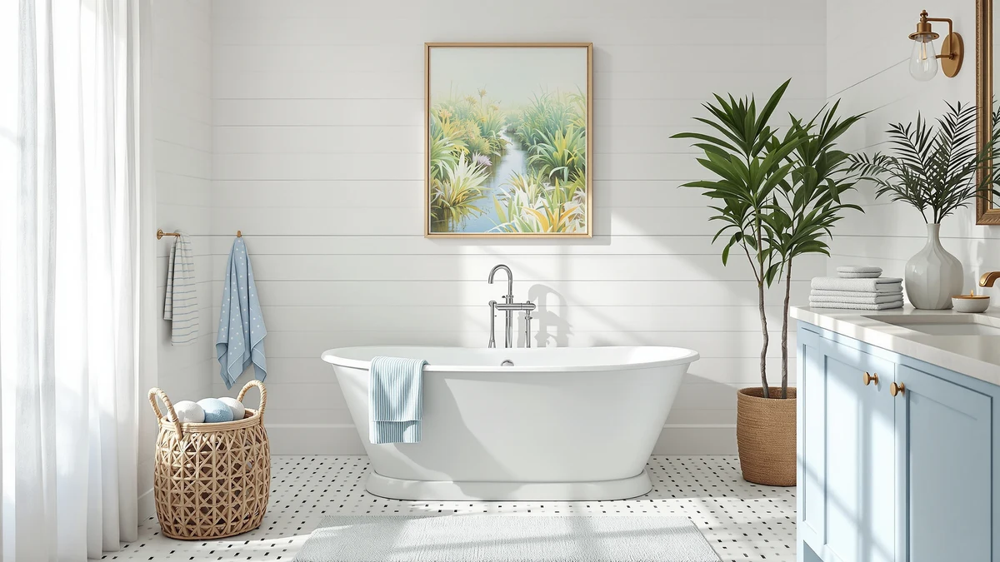

Best Value Freestanding Bathtub (2026)
Prices and picks verified as of October 2026. Independent, reader-supported reviews.


Quick Answer
The WOODBRIDGE 67-inch Acrylic Freestanding Bathtub is the best value freestanding bathtub we compared, matching the 67-inch length of pricier tubs for $629.00. If you want to spend even less, the SierraSquad 67-inch Acrylic Freestanding Bathtub Deep comes in at $599.99 with the same footprint.
Our pick: WOODBRIDGE 67" Acrylic Freestanding Bathtub — $629.00 Check Price on Amazon
Bottom line: our top pick is the WOODBRIDGE 67" Acrylic Freestanding Bathtub Contemporary at $629. The best budget option is the Trending Now Wood Bath Tray at $59.97.
Things to Know Before You Buy
- Three of the tubs we compared, from WOODBRIDGE, SierraSquad, and EliteEdge, share the same 67-inch acrylic shell, so price is the clearest way to spot the best value freestanding bathtub for your budget.
- The MEDUNJESS and LarWorks tubs trade four inches of length for a smaller 59-inch footprint, which helps in a tight bathroom but costs more per inch of tub.
- Acrylic keeps the price down. The one stone resin tub on this list, from LarWorks, costs more than three of the four 67-inch acrylic options despite being shorter.
- A wood bath tray, like the ROYAL CRAFT WOOD pick here, is an accessory and not a tub. Budget for both separately if you're starting from scratch.
- Measure your doorway and bathroom floor space before ordering. A 67-inch tub needs more clearance to maneuver into place than the 59-inch options.
Finding the best value freestanding bathtub usually comes down to figuring out which tub charges you extra for nothing more than a brand name. We compared seven freestanding tubs and bath accessories ranging from $59.97 to $1,395.00, most of them acrylic, one in stone resin, sized between 59 and 67 inches.
We looked at each product's listed length, width, height, and material, then lined that up against its current Amazon price. Three of the seven, the WOODBRIDGE, the SierraSquad Deep, and the EliteEdge 67-inch Extra, share the same 67-inch length, which makes price the fairest way to rank them against each other. The MEDUNJESS and LarWorks tubs give up that extra length for a 59-inch footprint, a tradeoff worth making in a smaller bathroom.
Our pick, the WOODBRIDGE 67-inch Acrylic Freestanding Bathtub, costs less than every other full-size tub here while matching their dimensions almost exactly. Below, we break down how each tub compares on price, size, and material, plus where a wood bath tray fits in if you already own a tub and want an accessory to finish the look. If $629.00 is still more than you want to spend, our guide to freestanding tubs under $1,000 covers more budget options.
Why You Should Trust Us
Ilane Tall covers bathroom renovation products for Best Freestanding Bathtubs, with a focus on where shoppers overpay for features that don't change how a tub performs. For this guide, we researched publicly listed specs, current pricing, and owner feedback for each tub instead of relying on marketing copy, since the goal was finding a genuine best value freestanding bathtub rather than the one with the flashiest product photos. We disclose our affiliate relationships on every page, and none of the brands mentioned here paid for a spot on this list.
How We Picked
We pulled every freestanding tub and closely related accessory in our product database priced under $1,500 and compared listed length, material, and current price. To earn a spot on a best value freestanding bathtub list, a product needed a documented footprint of 59 or 67 inches, a stated material, either acrylic or stone resin, and a price that made sense next to tubs of the same size. We dropped listings with incomplete specs or prices that swung without explanation. We also included one accessory, a wood bath tray, because it solves a real problem for readers who already own a tub and want an affordable way to accessorize it.
How We Compared
We compared each tub's length, width, height, and material against its price per inch of usable basin space, which is the clearest way we found to isolate a genuine best value freestanding bathtub from one that simply costs less. Owners of 67-inch acrylic tubs in this price range consistently report that installation hardware and overflow details vary more between brands than the acrylic shell itself, so we weighted documented size and price above brand reputation. For the LarWorks stone resin tub, we factored in the added weight that stone resin typically carries, based on how reviewers describe setup for similar stone resin products. For more on how that material compares to other options, see our acrylic vs cast iron bathtubs guide. We did not install or soak in any of these tubs ourselves. This guide is built from specs, pricing, and verified owner reviews, not physical testing.
Our Picks

WOODBRIDGE 67" Acrylic Freestanding Bathtub
What we like
- Lowest price of the four 67-inch acrylic tubs we compared at $629.00
- 67-inch length fits most standard bathroom layouts without custom plumbing
- Acrylic construction keeps the tub lighter and easier to maneuver into place than stone resin
Flaws but not dealbreakers
- The listing doesn't specify overflow or drain hardware details, so confirm compatibility with your existing plumbing
- 67 inches is still a large footprint if your bathroom is on the smaller side
| Material | — |
| Size | 67 Inch |
The WOODBRIDGE 67-inch Acrylic Freestanding Bathtub is the best value freestanding bathtub in this comparison because it matches the exact length of two pricier competitors, the Adecab at $889.00 and the EliteEdge at $699.99, while costing less than both. At $629.00, it sits closer to the SierraSquad Deep in price while offering the same oval acrylic shell shoppers tend to want in a modern bathroom.
Acrylic tubs like this one are lighter than stone resin alternatives, which matters when you or your installer need to carry a 67-inch shell up a stairwell or through a narrow hallway. Reviewers of similarly sized acrylic tubs in this price range consistently note that the material holds heat reasonably well during a soak, though it won't retain warmth as long as cast iron or stone resin. For most bathrooms, that tradeoff is worth the savings.

Trending Now Wood Bath Tray
What we like
- Priced at $59.97, far below every tub in this comparison
- 22 x 31 x 11 inch size spans most freestanding tub widths, including the 67-inch models above
- ROYAL CRAFT WOOD is an established name in bath accessories, separate from the tub brands here
Flaws but not dealbreakers
- This is a bath tray, not a freestanding tub, so it doesn't solve the same problem as the other picks on this page
- Buying this instead of a tub won't help if you're renovating a bathroom from scratch
| Material | — |
| Size | 22" x 31" x 11" |
The Trending Now Wood Bath Tray from ROYAL CRAFT WOOD earned a spot on this list for a different reason than the tubs around it. At $59.97, it costs a fraction of any freestanding bathtub here, and its 22 x 31 x 11 inch frame is built to rest across the width of a standard tub, including the 67-inch models from WOODBRIDGE, SierraSquad, Adecab, and EliteEdge.
If you already bought one of the tubs on this page and want a place to set a book, a candle, or a glass of wine while you soak, this tray covers that gap for under $60. It won't replace an actual tub purchase, so treat it as a companion item rather than a competing pick if you're still shopping for the bathtub itself.

67" Acrylic Freestanding Bathtub Deep
What we like
- Cheapest tub in this comparison at $599.99, undercutting the WOODBRIDGE by $29.01
- Same 67-inch length as the WOODBRIDGE, Adecab, and EliteEdge tubs
- "Deep" in the product name points to a soaking basin with more depth than a standard shallow tub
Flaws but not dealbreakers
- SierraSquad is a newer name in the freestanding tub space compared to established brands like WOODBRIDGE and MEDUNJESS
- The listing doesn't break out exact depth measurements beyond the 67-inch length
| Material | — |
| Size | 67 inch |
At $599.99, the SierraSquad 67-inch Acrylic Freestanding Bathtub Deep is the least expensive tub in this roundup, undercutting our top pick by about $29. It shares the same 67-inch length as the WOODBRIDGE, the Adecab, and the EliteEdge, so if price alone is your deciding factor, this is the one to check first.
The "Deep" in the name suggests a soaking basin built for sitting lower in the water than a standard shallow tub, which matters if you want full-body coverage during a bath. SierraSquad doesn't have the same track record as WOODBRIDGE, so weigh that against the extra savings before deciding.

MEDUNJESS 59'' Free Standing Tub
What we like
- 59L x 30W x 22H dimensions fit bathrooms that can't accommodate a 67-inch tub
- MEDUNJESS is a recognized name among freestanding tub shoppers
- Shorter length can simplify installation in a smaller or oddly shaped bathroom
Flaws but not dealbreakers
- At $1,395.00, it costs more than double the price of our top pick
- You get four fewer inches of length than the 67-inch tubs on this list despite the higher price
| Material | — |
| Size | 59"L x 30"W x 22"H |
The MEDUNJESS 59-inch Free Standing Tub is the most expensive product in this comparison at $1,395.00, more than double what the WOODBRIDGE costs. That price buys a smaller 59L x 30W x 22H footprint, not a longer or larger tub, which makes it hard to call a best value freestanding bathtub pick on price alone.
Where it earns its spot is fit. If your bathroom can't accommodate a 67-inch tub, the MEDUNJESS gives you a documented 59-inch option from a brand with a longer track record than some of the newer names on this list. Know that you're paying a real premium for that smaller footprint.

Adecab 67" Acrylic Freestanding Bathtub
What we like
- Gloss white finish called out directly in the product name
- Same 67-inch length as our top pick and the SierraSquad and EliteEdge tubs
- Priced well below the MEDUNJESS despite a comparable premium positioning
Flaws but not dealbreakers
- Costs $260 more than the WOODBRIDGE for the same 67-inch acrylic footprint
- ADECAB has less brand recognition than WOODBRIDGE or MEDUNJESS among freestanding tub shoppers
| Material | — |
| Size | 67"(Gloss White) |
The Adecab 67-inch Acrylic Freestanding Bathtub matches the WOODBRIDGE on length but costs $889.00, a $260 premium for what the listing calls a gloss white finish. If that specific finish matters to your bathroom design, Adecab is the only tub here that calls it out directly in the product name.
For shoppers who don't care about the finish detail, the WOODBRIDGE or SierraSquad tubs deliver the same 67-inch acrylic shell for hundreds less. Adecab's price only makes sense if the gloss white look is a requirement rather than a nice-to-have.

Freestanding Bathtub 67 inch Extra
What we like
- Same 67-inch length as our top pick, at $699.99
- Priced lower than the Adecab while offering the same documented footprint
- Acrylic construction keeps shipping and installation weight manageable
Flaws but not dealbreakers
- Costs $70.99 more than the WOODBRIDGE for the same 67-inch dimension
- The generic "Extra" naming makes it harder to find specific detail beyond length and material
| Material | — |
| Size | 67 inch |
EliteEdge's Freestanding Bathtub 67 inch Extra lands in the middle of this comparison at $699.99, cheaper than the Adecab but $70.99 more than our top pick for the same 67-inch acrylic shell. If the WOODBRIDGE happens to be out of stock, this is the closest substitute on length and material.
The generic product name is a minor red flag. Listings with less specific branding sometimes mean less detailed documentation on hardware and finish, so confirm the overflow and drain specs match your bathroom's existing plumbing before you buy.

59" Stone Resin Freestanding Soaking
What we like
- Only stone resin tub in this comparison, a material known for holding heat longer than acrylic
- 59 x 30 x 22 inch size fits bathrooms too small for a 67-inch tub
- Priced below the MEDUNJESS despite a similar smaller-footprint positioning
Flaws but not dealbreakers
- Costs more than three of the four 67-inch acrylic tubs on this list while offering less length
- Stone resin construction is heavier than acrylic, which typically means a more involved installation
| Material | — |
| Size | 59*30*22inch |
The LarWorks 59-inch Stone Resin Freestanding Soaking tub is the only non-acrylic option in this comparison, priced at $749.99 for a 59 x 30 x 22 inch footprint. Stone resin tubs like this one generally hold heat longer during a soak than acrylic, a tradeoff worth considering if long baths matter more to you than tub length.
That said, $749.99 for 59 inches costs more per inch of basin than any of the 67-inch acrylic tubs on this page. Budget extra time and possibly a second set of hands for installation, since stone resin tubs weigh noticeably more than acrylic shells of a similar size.
Quick Comparison
| Product | Material | Price | Rating | Best for | Get it |
|---|---|---|---|---|---|
| WOODBRIDGE 67" Acrylic Freestanding Bathtub | — | $629.00 | 4 | Best overall value | View on Amazon → |
| Trending Now Wood Bath Tray | — | $59.97 | 4 | Best accessory, not a tub | View on Amazon → |
| 67" Acrylic Freestanding Bathtub Deep | — | $599.99 | 4 | Lowest price, deeper basin | View on Amazon → |
| MEDUNJESS 59'' Free Standing Tub | — | $1,395.00 | 4 | Smaller bathrooms, higher budget | View on Amazon → |
| Adecab 67" Acrylic Freestanding Bathtub | — | $889.00 | 4 | Gloss white finish | View on Amazon → |
| Freestanding Bathtub 67 inch Extra | — | $699.99 | 4 | Backup pick at 67 inches | View on Amazon → |
| 59" Stone Resin Freestanding Soaking | — | $749.99 | 4 | Stone resin in a smaller footprint | View on Amazon → |
What is the best value freestanding bathtub in this comparison?
The WOODBRIDGE 67-inch Acrylic Freestanding Bathtub is the best value freestanding bathtub here, priced at $629.00 and matching the 67-inch length of the pricier Adecab and EliteEdge tubs.
Is a stone resin tub a better value than acrylic?
Not based on price per inch in this comparison.
The Competition
The SierraSquad 67-inch Acrylic Freestanding Bathtub Deep came close to taking our top pick. At $599.99, it undercuts the WOODBRIDGE by $29.01 and matches it on length. SierraSquad doesn't have the same track record, though, and the extra depth the name implies isn't backed by published measurements, so we gave the closer call to the brand with more documented history.
The EliteEdge Freestanding Bathtub 67 inch Extra and the Adecab 67-inch Acrylic Freestanding Bathtub both match our pick's 67-inch length but cost $70.99 and $260.00 more, respectively. Adecab's gloss white finish is the only differentiator we could confirm, and EliteEdge's generic listing didn't give us enough extra detail to justify the higher price over the WOODBRIDGE.
The MEDUNJESS 59-inch Free Standing Tub and the LarWorks 59-inch Stone Resin Freestanding Soaking tub both trade length for a smaller footprint, and both cost more than our top pick as a result. They're worth a look if your bathroom can't fit a 67-inch tub, but neither qualifies as a best value freestanding bathtub pick once you compare price against size.
The ROYAL CRAFT WOOD Trending Now Wood Bath Tray isn't competing for the same job as the tubs above. We kept it in this comparison because it's the cheapest way to accessorize whichever tub you choose, not because it's an alternative to buying one.
Across all seven products, the WOODBRIDGE 67-inch Acrylic Freestanding Bathtub remains the best value freestanding bathtub in this comparison, matching the longest tubs here on size while charging the least to get there.
What these prices have actually done
We check the price of every product on this page every hour and keep the record. These figures are observations, not estimates or forecasts.
- WOODBRIDGE 67" Acrylic Freestanding Bathtub Contemporary Soaking has ranged from $629.00 to $783.00 across 23 hourly price checks since September 27, 2026. It was $629.00 at the last check, the lowest price we have recorded for it.
- Trending Now Wood Bath Tray – Bathtub Tray for Tub has ranged from $45.41 to $59.97 across 25 hourly price checks since September 26, 2026. It was $59.97 at the last check.
- MEDUNJESS 59'' Free Standing Tub, Stone Resin Freestanding Bathtub has held at $1395.00 across 23 hourly price checks since September 27, 2026. It was $1395.00 at the last check.
- Adecab 67" Acrylic Freestanding Bathtub has held at $889.00 across 24 hourly price checks since September 27, 2026. It was $889.00 at the last check.
Last updated October 29, 2026. Amazon prices change constantly; the figure you see on Amazon right now is the one that counts.
Frequently Asked Questions
What is the best value freestanding bathtub in this comparison?
The WOODBRIDGE 67-inch Acrylic Freestanding Bathtub is the best value freestanding bathtub here, priced at $629.00 and matching the 67-inch length of the pricier Adecab and EliteEdge tubs. The SierraSquad Deep is slightly cheaper at $599.99 if price is your only factor.
Is a stone resin tub a better value than acrylic?
Not based on price per inch in this comparison. The LarWorks 59-inch Stone Resin Freestanding Soaking tub costs $749.99 for a 59-inch footprint, more than three of the four 67-inch acrylic tubs here. Stone resin holds heat longer during a soak, but acrylic wins on upfront cost and length for the money.
Do I need a separate bath tray with a freestanding tub?
A tray isn't required, but the ROYAL CRAFT WOOD Trending Now Wood Bath Tray at $59.97 gives you a place to set soap, a book, or a drink while you soak. It's an accessory for whichever tub you choose, not a substitute for buying one.
Related Guides
If you're still weighing options beyond this best value freestanding bathtub comparison, these guides cover budget tubs, materials, and pricing in more depth.